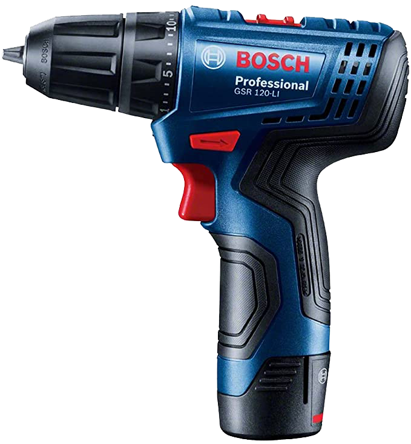

CAVANHA's SHOP
Parafusadeira Furadeira Bosch GSR 120-LI 12V 2 Baterias e maleta

- Parafusadeira e Furadeira BIVOLT, leve e compacta, ideal para montagem de gavetas e armários
- Torque máximo para trabalhos pesados 30Nm e para trabalhos leves 14Nm
- Gatilho eletrônico com velocidade variável e reversível, duas velocidades 0 – 400 rpm / 1500 rpm
- Para mais desempenho de sua ferramenta, use os acessórios Profissionais Bosch
- Diâmetro máximo de perfuração em madeira 20mm e aço 10mm
Componentes inclusos:
- 1 Furadeira/liarafusadeira GSR 120-LI
- 1 manual de instruções para GSR 120-LI
- 1 manual de instruções para carregador GAL 12V-20
- 1 carregador rápido GAL 12V-20
- 1 baterias 12V Max de 2,0 Ah Li-Ion
Detalhes técnicos:
- Marca: Bosch
- Fabricante: Robert Bosch Ltda.
- Cor: Azul
- Usos específicos do produto: Profissional
- Voltagem do carregador: Bivolt 110/220 Volts
- Etiqueta Nacional de Eficiência Energética (ENCE): 1
- Tipo de fonte de energia: Bateria
- Tipo de bateria: Íon-lítio
- Velocidade: 400 RPM
- Comprimento: 17.3 centímetros
- Largura: 18.8 centímetros
- Altura: 5.3 centímetros
- Peso: 2.42 Quilogramas